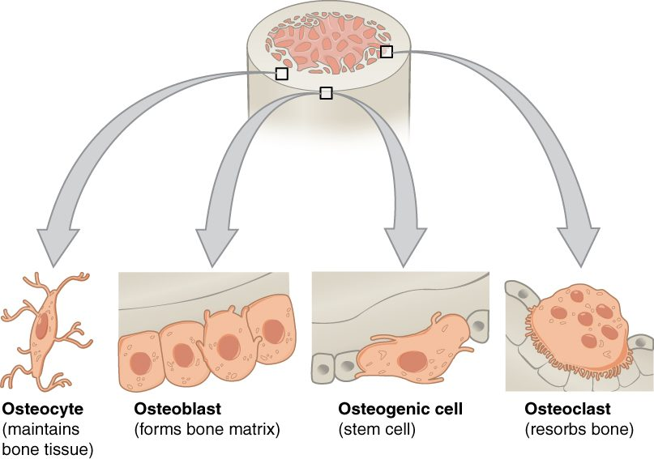

Bone cells and bone tissue
Bone matrix is about one third organic, mostly collagen, which resists pulling, and two thirds mineral, hydroxyapatite crystals of calcium phosphate, which resist squeezing.
Part 1 · Clinical hook
Why this matters
Mia is 4 and has already broken eleven bones, some from nothing more than a tumble on the carpet. Her X-rays show thin bones, but the bone she has is fully mineralized. The problem is a single faulty gene for collagen. Bone that is hard but lacks good collagen behaves like chalk: it snaps instead of bending. To see why both parts matter, and which cells build and remove them, you need to look at bone under the microscope.
Part 2 · Foundations
What this builds on
Part 3 · Prerequisite check
Quick check before you start
1. What is an ion?
- An atom or molecule with an electric charge
- A molecule made of amino acids
- A neutral atom with a full outer shell
Show the answer
An ion is an atom or group of atoms that has gained or lost electrons, so it carries a charge. Calcium ions (Ca2+) and phosphate ions are the ions of bone mineral.
- Correct: An atom or molecule with an electric charge:
- A molecule made of amino acids:
- A neutral atom with a full outer shell:
2. Which connective tissue fiber is made of a tough protein that resists pulling?
- Elastic fibers
- Collagen fibers
- Reticular fibers
Show the answer
Collagen fibers are thick bundles of collagen protein with great tensile strength. They are the main fiber of bone matrix.
- Elastic fibers:
- Correct: Collagen fibers:
- Reticular fibers:
3. In an adult, where is red bone marrow found?
- In the shafts of the long bones of the limbs
- In the articular cartilage
- In the flat bones, vertebrae, hip bones and the upper ends of the thigh and upper arm bones
Show the answer
Through childhood, yellow marrow replaces red marrow in the limb shafts. Adult red marrow remains in the flat bones, vertebrae, hip bones and the proximal epiphyses of the thigh and upper arm bones.
- In the shafts of the long bones of the limbs:
- In the articular cartilage:
- Correct: In the flat bones, vertebrae, hip bones and the upper ends of the thigh and upper arm bones:
Part 4 · Anatomy panel
Anatomy

With labels hidden, select a box to reveal its label.
Part 5 · Causal chain
How it works, step by step
- An osteogenic cell in the periosteum or endosteum divides.One daughter differentiates into an osteoblast on the bone surface.
- The osteoblast secretes osteoid: collagen and ground substance.Calcium phosphate crystals deposit along the collagen, and the matrix hardens.
- Matrix builds up around the osteoblast until the cell is enclosed.It now sits in a lacuna and has become an osteocyte.
- The osteocyte is walled in by mineral that nutrients cannot cross.It depends on its arms in the canaliculi, which link it to neighbors and to the vessels in the central canal.
Part 6 · Key ideas
Key ideas
- Compact bone, also called cortical bone, is the dense, ivory-white bone that forms the wall of a bone's shaft and a thin shell over every bone. It is built of parallel cylinders called osteons and is strongest along the bone's length.
- Spongy bone, also called cancellous bone, is a lattice of thin bony struts called trabeculae (Latin, little beams) with marrow-filled spaces between them. It fills the ends of long bones and the inside of other bones, under a shell of compact bone, and its struts line up along the directions of the loads the bone carries.
Part 7 · Core concept
Core concepts
Part 8 · Misconception
A common mistake
The wrong idea: Bone's strength comes from its minerals, so harder bone is always stronger bone.
What actually happens: Mineral makes bone hard and resistant to squeezing, but on its own it is brittle, like chalk. Collagen makes bone resist pulling and bend slightly before breaking. Bone with too little good collagen, as in brittle bone disease, snaps easily even when its mineral content is normal. Strength comes from the two together.
Part 9 · Retrieval check
Check yourself
Anything you miss goes into your review queue.
1. Name the pinned cell.
- Osteoblast
- Osteocyte
- Osteogenic cell
- Osteoclast
Show the answer
The osteoclast is a very large cell with several nuclei and a frilled membrane pressed against the bone. It resorbs bone.
- Osteoblast: Osteoblasts are medium-sized cells with one nucleus that sit in rows on bone surfaces.
- Osteocyte: An osteocyte is a small cell with long branching arms, inside the matrix.
- Osteogenic cell: An osteogenic cell is a flat stem cell with one nucleus.
- Correct: Osteoclast: Correct. Huge, many nuclei, frilled edge on the bone: an osteoclast.
2. A student soaks a chicken bone in vinegar for a week. It keeps its shape but bends like rubber. What did the vinegar remove?
- The collagen and ground substance
- The osteocytes
- The calcium phosphate crystals
- The periosteum
Show the answer
Vinegar is an acid, and acid dissolves the calcium phosphate (hydroxyapatite) crystals, just as the acid from osteoclasts does. What remains is the collagen framework, which is flexible but cannot resist squeezing.
- The collagen and ground substance: If the collagen and ground substance had gone, the bone would be hard and brittle, as it is after baking. The bone bends because they remain.
- The osteocytes: Removing cells would not change how hard or flexible the matrix is; the matrix sets those properties.
- Correct: The calcium phosphate crystals: Correct. The acid dissolved the mineral and left the flexible collagen.
- The periosteum: The periosteum is a thin outer membrane. Its loss would not make the whole bone rubbery.
3. Mia, 4, has had eleven broken bones. The bone she makes is fully mineralized, but a gene change makes her collagen faulty. Why do her bones break so easily?
- Her bones store too little calcium
- Her bone lacks the flexibility to bend under a load
- Her osteoclasts fail to resorb old or damaged bone
- Her bones have too few lacunae for osteocytes
Show the answer
Collagen resists pulling and gives bone slight flexibility. Mineral without good collagen is like chalk: hard but brittle, so it snaps instead of bending. This inherited condition is called brittle bone disease.
- Her bones store too little calcium: The question says her bone is fully mineralized, so storing mineral is not the problem.
- Correct: Her bone lacks the flexibility to bend under a load: Correct. Faulty collagen leaves hard but brittle bone.
- Her osteoclasts fail to resorb old or damaged bone: Osteoclasts are not affected by a collagen defect, and failing to resorb bone would not in itself make bones snap.
- Her bones have too few lacunae for osteocytes: Lacunae hold osteocytes. A collagen defect does not remove them, and it is the matrix that sets strength.
4. Where do osteoclasts come from?
- Osteoblasts that change their job
- Fused precursor cells of the macrophage line
- Osteocytes released from their lacunae
- Osteogenic cells of the periosteum
Show the answer
Osteoclasts form when several precursor cells from the blood-forming line in red marrow, the line that also makes macrophages, fuse. That is why they have several nuclei. They are not part of the osteogenic cell to osteoblast to osteocyte line.
- Osteoblasts that change their job: Osteoblasts become osteocytes, not osteoclasts. The two cell types come from different lines.
- Correct: Fused precursor cells of the macrophage line: Correct. Osteoclasts are fused cells of the macrophage line.
- Osteocytes released from their lacunae: Osteocytes stay in their lacunae for life. They do not become osteoclasts.
- Osteogenic cells of the periosteum: Osteogenic cells make osteoblasts. Osteoclasts come from a separate, blood-forming line.
5. In an experiment, the canaliculi around a group of osteocytes in compact bone are blocked. What happens to those osteocytes?
- They carry on normally
- They divide to make new canaliculi
- They turn into osteoclasts
- They die, cut off from oxygen and nutrients
Show the answer
Mineralized matrix is almost impermeable. Osteocytes get oxygen and nutrients only from vessels in the central canal, passed along through canaliculi. Block the canaliculi and the cells starve.
- They carry on normally: They cannot carry on normally: nutrients cannot diffuse through mineralized matrix, which is why canaliculi exist.
- They divide to make new canaliculi: Osteocytes do not divide.
- They turn into osteoclasts: Osteocytes do not become osteoclasts; the two come from different cell lines.
- Correct: They die, cut off from oxygen and nutrients: Correct. The canaliculi are their only supply line.
6. Select every feature of spongy bone.
- Built of trabeculae
- Organized into osteons with central canals
- Spaces that can hold red marrow
- Fills the ends of long bones
- Makes up about 80% of the skeleton's mass
- Makes up most of the shaft of a long bone
Show the answer
Spongy bone is a lattice of trabeculae with marrow in the spaces between them, and it fills the ends of long bones. Osteons, most of the shaft and about 80% of the skeleton's mass are compact bone.
- Correct: Built of trabeculae: Correct. Trabeculae are its struts.
- Organized into osteons with central canals: Osteons with central canals are the units of compact bone. Trabeculae are thin enough not to need a central canal.
- Correct: Spaces that can hold red marrow: Correct. Its spaces hold marrow, red in some bones.
- Correct: Fills the ends of long bones: Correct. The epiphyses are filled with spongy bone.
- Makes up about 80% of the skeleton's mass: About 80% of the skeleton's mass is compact bone. Spongy bone is about 20%.
- Makes up most of the shaft of a long bone: The shaft is mostly compact bone around the marrow cavity. Spongy bone fills the ends.
7. A student describes how an osteoclast resorbs bone. One step is wrong. Which one?
- The osteoclast seals its frilled membrane onto the bone surface
- It pumps hydrogen ions onto the bone
- The acid dissolves the calcium phosphate crystals
- Enzymes from its lysosomes digest the collagen
- The released calcium and phosphate are locked away inside the osteoclast
Show the answer
The calcium and phosphate freed from the matrix move into the blood. That is how bone works as a mineral bank: osteoclasts withdraw minerals from it.
- The osteoclast seals its frilled membrane onto the bone surface: This step is right. The sealed space keeps the acid and enzymes against the bone.
- It pumps hydrogen ions onto the bone: This step is right. Pumped hydrogen ions acidify the sealed space.
- The acid dissolves the calcium phosphate crystals: This step is right. Acid dissolves hydroxyapatite.
- Enzymes from its lysosomes digest the collagen: This step is right. Once the mineral is gone, lysosomal enzymes digest the exposed collagen.
- Correct: The released calcium and phosphate are locked away inside the osteoclast: This is the error. The released minerals pass into the blood rather than being stored in the cell.
Part 10 · Summary
Summary
Bone matrix is about one third organic, mostly collagen, which resists pulling, and two thirds mineral, hydroxyapatite crystals of calcium phosphate, which resist squeezing. Newly laid, unmineralized matrix is osteoid. Four cells run bone: osteogenic cells, the dividing stem cells; osteoblasts, which build matrix; osteocytes, former osteoblasts trapped in lacunae that maintain matrix and sense load; and osteoclasts, huge fused cells of the macrophage line that resorb bone with acid and enzymes, releasing calcium and phosphate into the blood. Compact (cortical) bone is built of osteons: lamellae around a central canal, with osteocytes in lacunae linked by canaliculi, and perforating canals joining the osteons. Spongy (cancellous) bone is a lattice of trabeculae with marrow between them and no osteons; in flat skull bones it is called the diploë.
Part 11 · Up next
What comes next
Part 12 · Connections